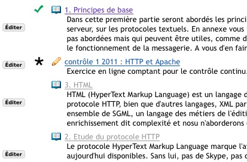

Introduire des séquences avec Leçon
Il peut être intéressant d'organiser l'ordre dans lequel les étudiants parcourent les pages ou exécutent une tâche (quizz, devoir, forum). Il est également nécessaire, en formation continue notamment, de vérifier que les étudiants ont bien parcouru les documents.
Leçon ne veut pas forcer les étudiants à suivre un chemin trop rigide. Il est plutôt pensé pour permettre au professeur de baliser le parcours au moyen de conditions requises. Les étudiants gardent leur liberté de parcours en dehors de ces points de contrôle. .
Ceci est réalisé en déclarant quels items sont nécessaires et à quelles conditions, éventuellement. Vous pouvez également décider que certains items restent innaccessibles tant que tous les items requis auparavant n'ont pas été réalisés.

Exemple 1. Exemple avec deux items requis et un quizz sous condition. La lecture du chapitre 1 est validée (coche verte), le quizz n'a pas encore été rendu ou noté (astérique noire) et la suite apparait en gris car elle ne deviendra accessible que lorsque les deux conditions préalables auront été remplies.
Un exemple
Un scénario typique pourrait être :
- Chaque cours contient des documents à lire et un quizz à effectuer. Il est nécessaire que les étudiants aient lus certains documents pour recevoir le crédit de leurs études.
- Lorsque les étudiants auront complétés tout le travail correspondant aux entrées de Leçon dans le menu de gauche, ils devront passer un test final de certification.
Pour obtenir ce résultat, organisez le cours en items (chaque item correspondra à une section du cours) avec des documents à lire et un quizz final pour finir. Editez chaque quizz en cochant la case "Ne pas publier si tous les prérequis ne sont pas remplis". Le quizz restera innacessible, en gris, tant que les éléments antérieurs marqués comme "requis" n'auront pas été parcouru.
Vous pouvez déclarer toutes les unités comme requises en une seule fois en employant le bouton "Paramètres" à coté du lien "Titre".
Dans notre exemple toutes les unités sont requises. Il suffirait donc, dans l'item final, de cocher "Ne pas publier si tous les prérequis ne sont pas remplis".
Forcer un ordre de parcours spécifique
Il ne nous semble pas utile de fixer plus de contraintes que nécessaire. En précisant, pour chaque item qu'ils sont requis, on peut obliger les étudiants à les parcourir dans un ordre imposé. Ceci ne nous semble pas utile dans la plupart des cas.
Lorsqu'on veut imposer un ordre de parcours séquentiel, il faut donc poser la condition " Ne publier que si les prérequis sont complétés" sur tous les items sauf le premier.
Tests et devoirs requis
Requérir un test ou un devoir est un peu plus complexe que requérir de parcourir une page (on ne peut jamais être certain que l'étudiant l'a lue). Vous pouvez demander que l'étudiant ait rendu son devoir ou répondu au quizz et vous pouver imposer, de plus, qu'il ait obtenu une note minimale.
Lorsque vous imposez une note minimale, n'oubliez pas le cas où un étudiant ne réussirait pas. Si vous désirez lui permettre de recommencer le devoir ou le test, pour pouvoir continuer à parcourir le cours, vous devrez régler cette situation dans les paramètres du test ou du devoir, en précisant que des soumissions multiples sont possibles.
Notez que l'on peut avoir plus d'un item requis, par exemple la possibilité de passer un test à la condition que plusieurs pages aient été parcourues. Un item marqué "Ne pas publier" le devient lorsque tous ceux qui le précèdent ont été satisfaits.
Comme il a été dit auparavant on peut forcer un ordre séquentiel mais Leçon n'a pas été conçu dans cet esprit. Ce n'est probablement pas le meilleur outil pour un ordre strictement linéaire.